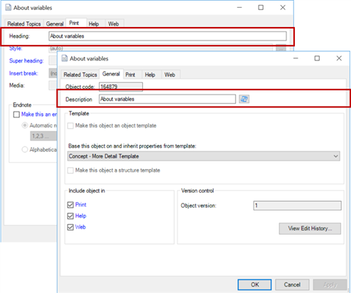

Variables in content in Author-it are essentially placeholders for text. They are useful for quickly changing content, ensuring consistency, and enabling flexibility with content between outputs or books. For example, you can use a variable code for a product's name. The variable ensures that the product name is correct across all books. If the product name changes, changing the variable automatically results in all books using that variable publishing with the new name.
In the content, you insert or type a variable code which is replaced during publishing with defined content (the replacement value). For example, when you publish, the <company> variable is replaced with Vertex, Inc.
There are different types of variables. Some variables are dynamic, enabling the author to select the replacement value either when the variable is assigned or during publishing. Other variables are fixed and the replacement value cannot be changed. In the Knowledge Management department, the majority of the variables are fixed variables.
Variable limitations
Following are some limitations to keep in mind when using variables:
Variables are only resolved if there is a defined variable that matches the text in brackets.
Variable assignments on a book object do not persist if a book is used as a sub-book. If a book is used as a sub-book, variable assignments at the topic level are respected in the host book.
Variable names may only contain the characters 0-9, a-z, A-Z and _ (underscore). Variable names are not case-sensitive.
Variables can be used in a topic heading but not the topic description. The topic heading is set in the object properties on the Print, Help, and Web tabs. The topic description is set in the object properties on the General tab. The following graphic displays the Heading and Description fields:

For more information about variables, refer to these resources:
Variable use and best practices (Author-it Knowledge Center)
Using Variables (Author-it Video)
View variables assigned to an object (Author-it Knowledge Center)
Display library level variables (Author-it Knowledge Center)
Use variables in a topic (Author-it Knowledge Center)